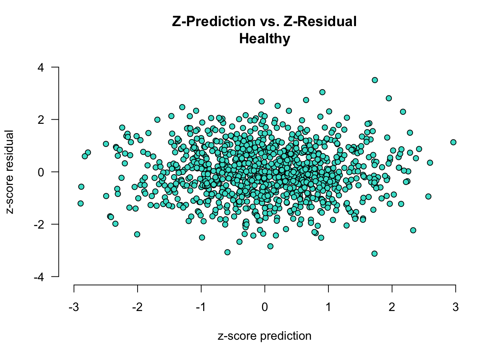
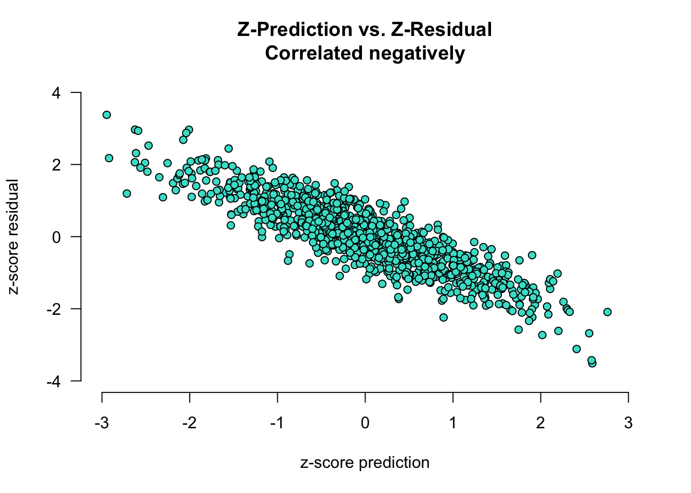
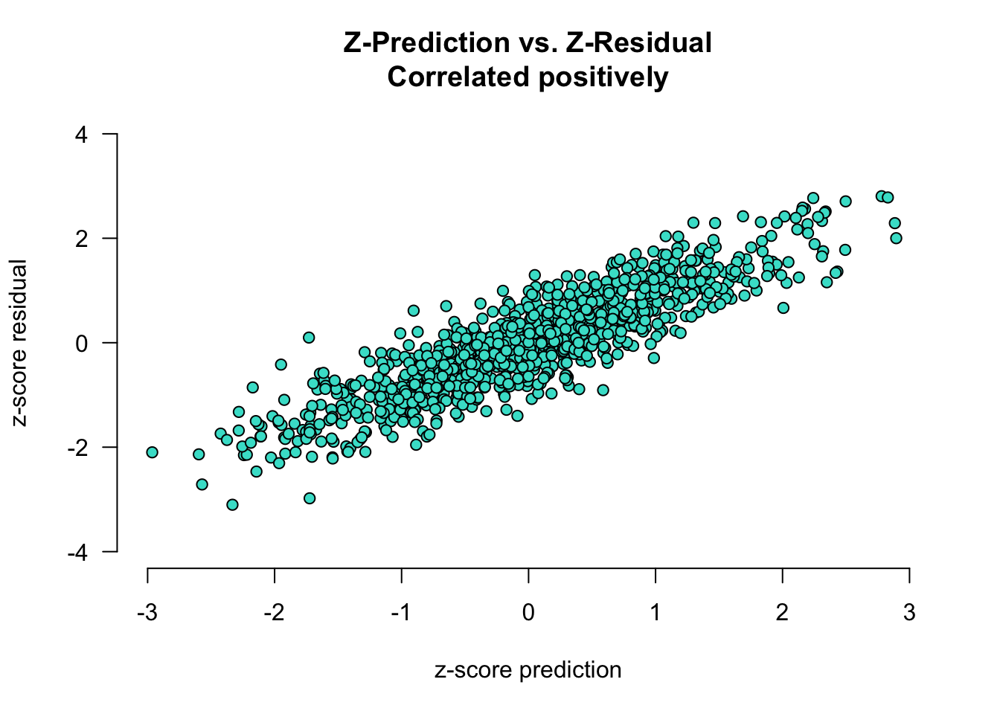
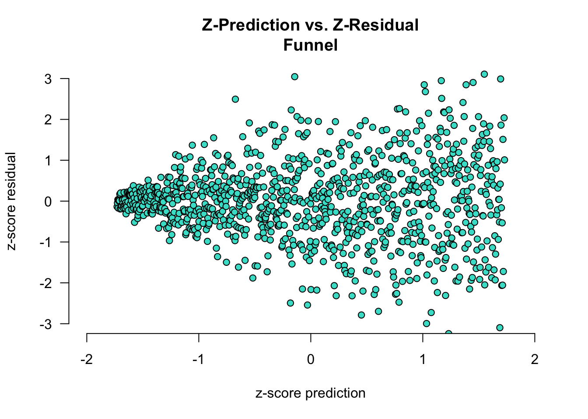

Some examples of heteroscedasticity
In linear regression, a core assumption is that there is no systematic error: our model should be equally accurate/wrong across the whole range of its predictions (i.e., homoscedasiticity of error). To assess this assumption, we can look at a scatterplot of the standardized (i.e., z-scores) model predictions and residuals, and hope to see an uncorrelated cloud of points, rather than some other shape (e.g., funnel shape or correlation).
While we want as little error in the model as possible, all models will have some error and that is OK as long as this error is reliable. Unsystematic error is desirable, because it allows us to get a grip on the error of the model and reliably quantify our uncertainty across the whole range of the dependent variable.
For example, let’s say we want to predict people’s cognitive performance based on their age. While age is not a perfect predictor, it might help us explain some variability in cognitive performance. Homoscedasticity in this case means that our prediction error will be constant across the whole range of predicted performance scores. Because we base our predictions on age, that means that we want our model to be equally accurate for young people as for old people.
Below are some cases of the predicted vs. residual plot. The definition of error here is observed - predicted, so when a residual is greater than 0, that means the observed value was greater than the predicted value (i.e., underestimation).
First we have an example of a “healthy” plot, where there is no systematic error:
Next, two cases where the error and the predictions are correlated. In the plot below, the error and predictions are negatively correlated:
- for low predicted values (i.e., z-pred \(< 0\)), the residual is generally greater than 0 (i.e., we are underestimating cognitive ability in young participants)
- for high predicted values (i.e., z-pred \(> 0\)), the residual is generally lower than 0 (i.e., we are overestimating cognitive ability in old participants)

In the plot below, the error and predictions are positively correlated:
- for low predicted values (i.e., z-pred \(< 0\)), the residual is generally lower than 0 (i.e., we are overestimating cognitive ability in old participants)
- for high predicted values (i.e., z-pred \(> 0\)), the residual is generally greater than 0 (i.e., we are underestimating cognitive ability in young participants)

Finally, systematic error can look like in the plot below, like a funnel. Here, the model is very accurate when it is predicting low values for the dependent variable: the residuals are very close to 0 when z-pred is low. When the mode predicts high values, it is very error-prone, as demonstrated by the residuals being much further away as z-pred increases. To relate it to the example of age and cognitive performance: our model is very good for predicting performance of young people (low age, resulting in low z-pred) but struggles significantly when predicting the performance of older individuals (high age, resulting in high z-pred). This systematic error indicates that the model’s accuracy diminishes as the predicted values increase, suggesting potential issues with how the model handles higher ranges of the dependent variable. This pattern might be due to unaccounted variables or non-linear relationships that the model fails to capture adequately.
